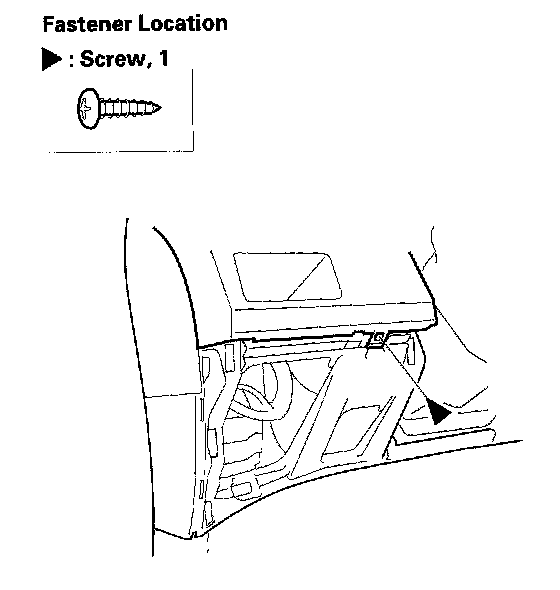
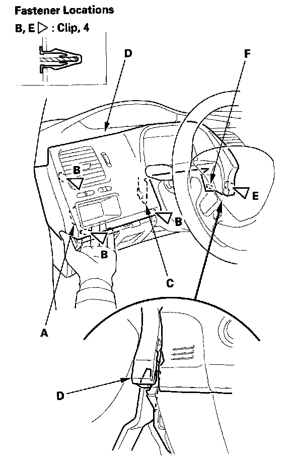
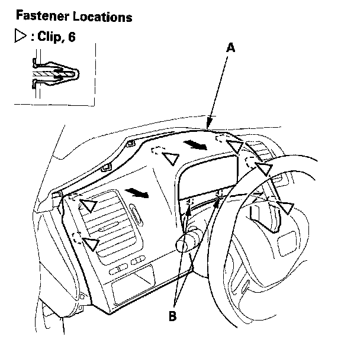
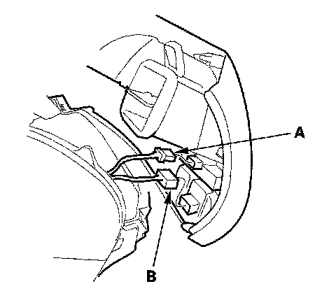
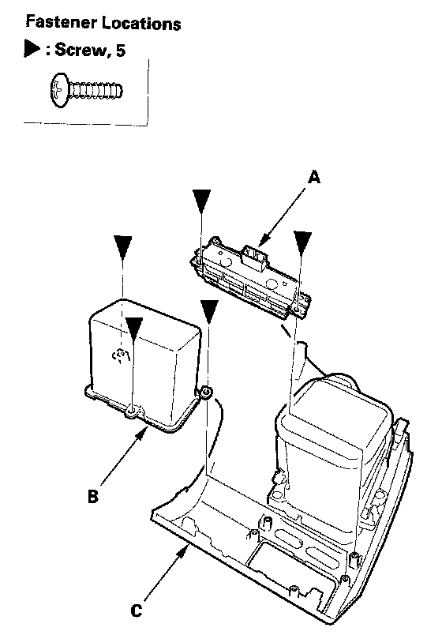

Subdisplay Visor
Subdisplay Visor Removal/InstallationSpecial Tools Required
KTC trim tool set SOJATP2014 *
* Available through the American Honda Tool and Equipment Program
NOTE:
- Put on gloves to protect your hands.
- Take care not to scratch the dashboard and related parts.
- Use the appropriate tool from the KTC trim tool set to avoid damage when prying components.
1. Remove the driver's dashboard tower cover
2. Tilt the steering column down, and telescope it out.

3. Remove the screw.

4. Pull the back of the driver's pocket (A) (4-door) or switch panel (2-door) by hand from the driver's lower cover opening to release the clips (B) and hook (C) on the outside.
5. Pry up on the inside edge of the subdisplay visor (D) with a trim tool to detach the clip (E), and release the pin (F).

6. Detach the clips along the upper edge of the subdisplay visor (A). Gently pull out the visor to release the hooks (B).

7. Disconnect the illumination control switch connector (A), and power mirror switch connector (B) (2-door).

8. if necessary, remove the screws, then remove the illumination control switch (A), and driver's pocket (B) (4-door) or the switch panel (2-door) from the subdisplay visor (C).
9. Install the subdisplay visor in the reverse order of removal, and note these items:
- Make sure all connectors are plugged in properly.
- Check if the clips are damaged or stress-whitened, and if necessary, replace them with new ones.
- Push the clips into place securely.